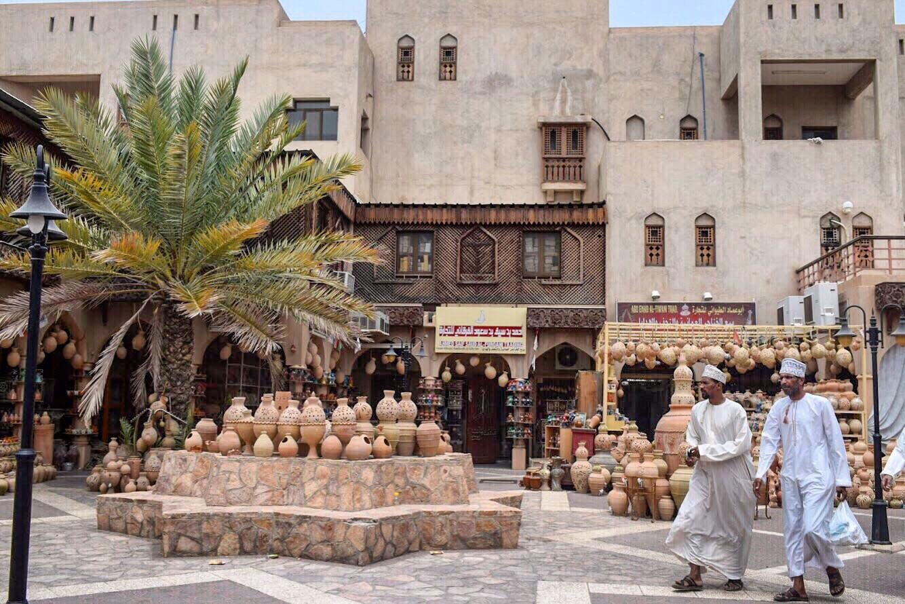
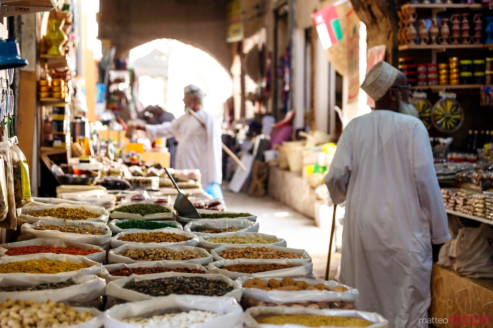
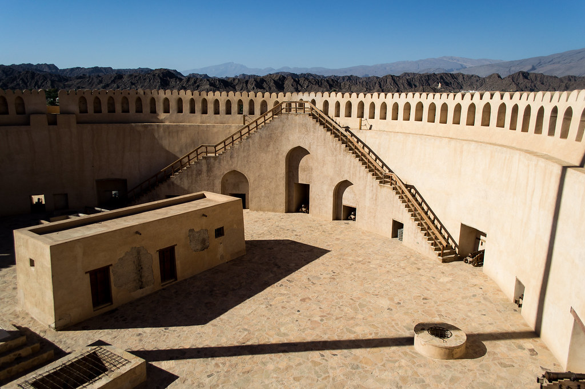

Some of the Astonishing places to visit in Nizwa
Souq Nizwa
This expansive market, which is home to one of the nation's oldest souqs, specializes mostly in fruit, vegetables, meat, and fish, all of which are kept in different blocks behind the large, crenellated section of city wall that looks out over the wadi. The section of the souq closest to the fort that specializes in handicrafts targets passing tourists.
| 
Walter Schärer |
| 
Robert Wilson |
-
Nizwa Fort
Beginning in the eleventh century AH/middle of the seventeenth century AD, Imam Sultan bin Saif bin Malik Al Yarubi (1649-1679 AD) oversaw the construction of Nizwa Fort. It took twelve years to construct the fort. It has a diameter of 45 m and a height of 34 m. It is a platform with a flat roof that is 30 meters above the ground and 15 meters high, built on a base of crushed stones. There are cannon holes in it.
|  Ajay suresh |
 Martin Falbisoner |